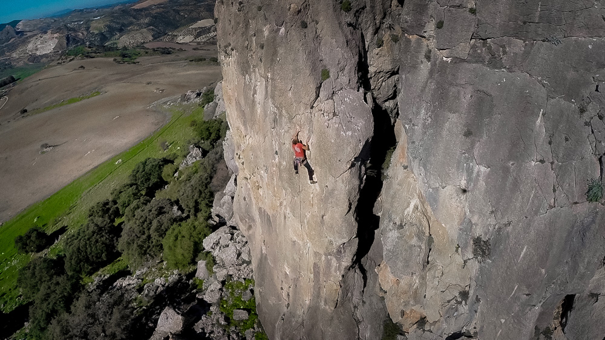

La fotografía se hizo importante para mí cuando empecé a ver en mis imágenes sentimientos, algo que parecía desvelar lo más profundo de las personas, comprendí que la actitud respetuosa del fotógrafo hacía la vida, era algo determinante para captar la armonía y la naturalidad de las cosas.
Hacer constante en mi vida esa actitud se convirtió en un reto, en algo digno por lo que trabajar. Hoy me ayuda a comprender y amar un poco más el insondable mundo que nos rodea.
---
"La esencia del momento se vé y trasciende en el tiempo cuando un instante con corazón es ordenado por un fotógrafo."
